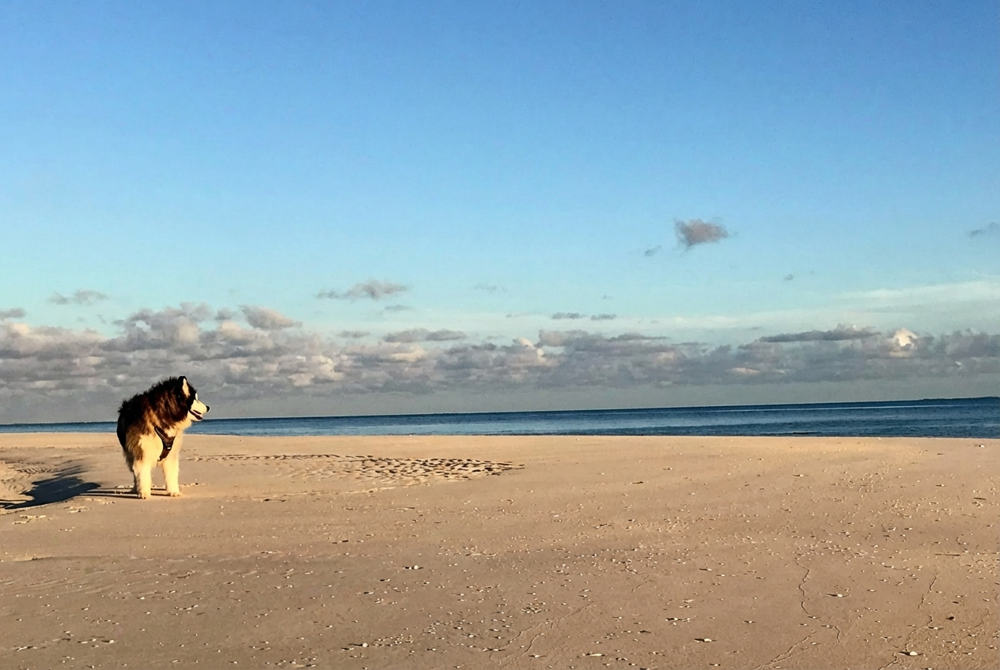

IMG_1311_Original.jpeg
Multi-LLM Analysis
75.0/100
Consensus Score
Original Review
A peaceful capture with lovely lighting conditions. The primary issue is the tilted horizon, which is a quick fix. Post-processing should focus on drawing the eye to the dog by recovering shadow detail and slightly refining the composition.
- Straighten the horizon line
- Lift shadows on the subject
- Increase clarity and dehaze on the sky
Strong minimalist beach scene with pleasing light and a clear subject, but the dog is relatively small in the frame and the sky occupies a lot of unused space. A slightly tighter crop, precise horizon leveling, and targeted subject/sky adjustments would increase impact while preserving the calm mood.
- Crop slightly from the top (reduce empty sky by ~10–20%) and a touch from the right to place the dog closer to a rule-of-thirds intersection while keeping the wide, minimal feel
- Level the horizon (minor rotation) and apply a gentle vertical transform if needed to keep the seascape lines clean
- Local adjustment on the dog: lift shadows (+20 to +35), add texture/clarity (+10 to +20), and slightly reduce highlights on the sunlit fur (-10 to -20) to retain detail
Analysis failed: Error code: 400 - {'type': 'error', 'error': {'type': 'invalid_request_error', 'message': 'Your credit balance is too low to access the Anthropic API. Please go to Plans & Billing to upgrade or purchase credits.'}, 'request_id': 'req_011CXamKFuJdSQBs9k6z59Jy'}
Combined Improvements Applied:
- Straighten the horizon line
- Lift shadows on the subject
- Increase clarity and dehaze on the sky
- Crop slightly from the bottom right
- Crop slightly from the top (reduce empty sky by ~10–20%) and a touch from the right to place the dog closer to a rule-of-thirds intersection while keeping the wide, minimal feel
- Level the horizon (minor rotation) and apply a gentle vertical transform if needed to keep the seascape lines clean
- Local adjustment on the dog: lift shadows (+20 to +35), add texture/clarity (+10 to +20), and slightly reduce highlights on the sunlit fur (-10 to -20) to retain detail
- Sky refinement: apply a graduated filter to deepen the upper sky (slightly lower exposure -0.2 to -0.4 and add a bit of dehaze +5 to +10) while keeping cloud highlights protected
- Global color/tonal tune: warm white balance slightly (+200 to +500K) and add a mild S-curve or contrast in midtones; optionally reduce blue saturation a touch (-5 to -10) if the sky feels too cyan
Before & After Comparison